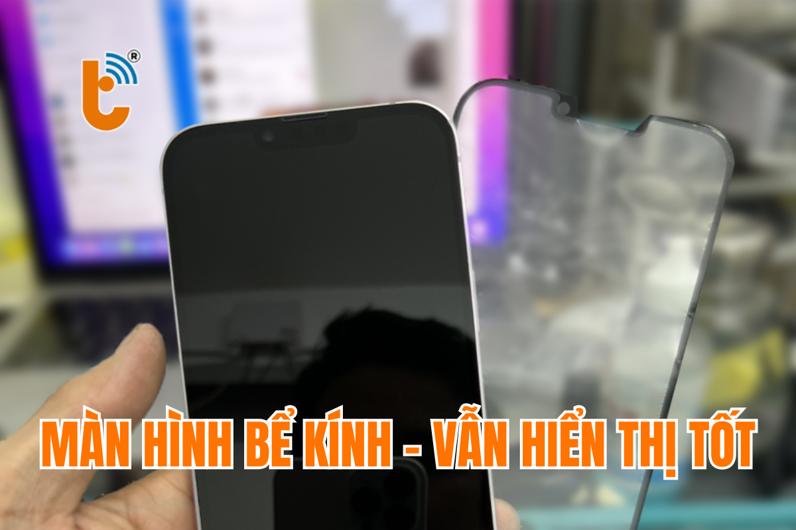

Ép Kính iPhone X Series – Chất Lượng Cao, Lấy Liền, Giá Rẻ Tại TP.HCM
Những chiếc smartphone của Apple luôn toát lên vẻ sang trọng và tinh tế. Tuy nhiên, khi mặt kính bị hỏng, sự trải nghiệm của người dùng sẽ bị ảnh hưởng ngay lập tức. Với những chiếc iPhone X, XS, XR, XS Max, mặt kính không chỉ bảo vệ màn hình mà còn quyết định phần lớn vẻ đẹp và sự mượt mà trong quá trình sử dụng.
Vậy khi nào bạn cần ép kính iPhone và nên lựa chọn dịch vụ nào? Thành Trung Mobile chính là địa chỉ tin cậy giúp bạn phục hồi chiếc iPhone của mình với chất lượng tuyệt vời, lấy ngay, giá rẻ, bảo hành lâu dài.
Dấu Hiệu Cần Ép Lại Mặt Kính iPhone X Series
Đôi khi, một chiếc iPhone sang trọng không còn hoàn hảo như trước do những vết nứt, vỡ hay trầy xước trên mặt kính. Dưới đây là những dấu hiệu bạn cần lưu ý:
- Vết nứt, vỡ rõ rệt trên mặt kính
- Trầy xước gây ảnh hưởng đến khả năng cảm ứng và thẩm mỹ
- Kính bị ám màu hoặc ố vàng, làm giảm chất lượng hiển thị
- Cảm ứng không mượt mà, hay bị "rít tay" khi sử dụng
Nếu thay mặt kính kém chất lượng, bạn sẽ gặp phải tình trạng mất thẩm mỹ, kính không khít với khung máy, và hình ảnh hiển thị không rõ nét. Điều này không những làm giảm trải nghiệm mà còn có thể gây khó chịu khi sử dụng.
Khi Nào Cần Ép Lại Mặt Kính iPhone X Series?
Với những chiếc iPhone X Series, bạn chỉ cần ép kính nếu màn hình cảm ứng và hiển thị vẫn còn tốt. Cụ thể:
- Màn hình cảm ứng hoạt động bình thường, không có sọc hay điểm chết
- Màn hình không bị đốm mực, vẫn lên hình rõ ràng và không bị ám ố
- Kính bị vỡ, nứt nhưng không ảnh hưởng đến màn hình
Ép lại kính là một lựa chọn tiết kiệm chi phí, giúp bạn giữ lại màn hình zin của máy. Thời gian ép kính thường chỉ mất từ 1-2 giờ, và bạn có thể lấy ngay chiếc iPhone của mình sau khi hoàn tất dịch vụ.
Ép Mặt Kính Mới Bao Nhiêu Tiền?
Chi phí ép kính cho iPhone X Series tại Thành Trung Mobile rất hợp lý, và có sự khác biệt tuỳ theo dòng máy. Dưới đây là bảng giá tham khảo:
| Dòng Máy | Giá Ép Kính | Thời gian làm | Bảo hành |
|---|---|---|---|
| iPhone X | 400,000 VNĐ | 1 - 2 Giờ | 12 Tháng |
| iPhone XS | 400,000 VNĐ | 1 - 2 Giờ | 12 Tháng |
| iPhone XR | 400,000 VNĐ | 1 - 2 Giờ | 12 Tháng |
| iPhone XS Max | 450,000 VNĐ | 1 - 2 Giờ | 12 Tháng |
Để được tư vấn chính xác hơn về giá, hãy liên hệ qua hotline hoặc đến trực tiếp cửa hàng của chúng tôi. Chúng tôi luôn sẵn sàng hỗ trợ và cung cấp các ưu đãi hấp dẫn dành cho bạn.
Tham khảo thêm dịch vụ ép kính iPhone XS Max tại đây.
Ép Kính Có Ảnh Hưởng Đến Màn Hình Không?
Với quy trình ép kính đúng kỹ thuật tại Thành Trung Mobile, bạn hoàn toàn yên tâm là việc này không ảnh hưởng đến màn hình của máy. Mặt kính và màn hình của iPhone là hai phần riêng biệt, và việc thay mặt kính chỉ tác động đến lớp bảo vệ bên ngoài mà không làm hư hại đến màn hình hiển thị hoặc cảm ứng của máy.
Chúng tôi cam kết sử dụng những loại mặt kính zin, chất lượng, không làm giảm độ sáng, độ nét hay chất lượng cảm ứng của iPhone. Việc ép kính đúng kỹ thuật sẽ giúp máy của bạn trở lại trạng thái như mới, mà không lo ảnh hưởng đến các thành phần bên trong máy.
Ép Kính Có Lâu Không?
Thời gian ép kính tại Thành Trung Mobile nhanh chóng, chỉ mất khoảng 1-2 giờ. Chúng tôi sử dụng các thiết bị ép kính hiện đại, giúp quá trình này diễn ra nhanh chóng và chính xác. Bạn có thể ngồi chờ trực tiếp hoặc thoải mái làm việc khác trong lúc chúng tôi thực hiện dịch vụ cho bạn.

Thành Trung Mobile – Địa Chỉ Ép Kính Uy Tín Tại TP.HCM
Thành Trung Mobile là địa chỉ ép kính iPhone uy tín tại TP.HCM, cam kết mang đến cho bạn:
- Mặt kính zin, ép kính đẹp như mới, không hở keo, không ảnh hưởng đến thẩm mỹ
- Chất lượng hiển thị sắc nét, cảm ứng mượt mà, không bị "rít tay"
- Đội ngũ kỹ thuật viên giàu kinh nghiệm, thực hiện quy trình ép kính chuyên nghiệp
- Bảo hành lâu dài, bảo vệ quyền lợi khách hàng
- Quy trình minh bạch, bạn có thể xem trực tiếp kỹ thuật viên làm việc
Chúng tôi có nhiều chi nhánh tại TP.HCM để bạn dễ dàng lựa chọn và sử dụng dịch vụ. Hãy đến ngay Thành Trung Mobile để trải nghiệm dịch vụ ép kính chất lượng nhất!

Quy Trình Ép Kính Tại Thành Trung Mobile
Quy trình ép kính tại Thành Trung Mobile được thực hiện theo các bước chi tiết sau đây:
- Tiếp nhận máy và kiểm tra tình trạng mặt kính và màn hình
- Thông báo giá và thời gian ép kính cho khách hàng
- Thực hiện ép kính và kiểm tra lại màn hình sau khi thay
- Bàn giao máy cho khách hàng, in phiếu bảo hành và hướng dẫn bảo quản
Hướng Dẫn Bảo Quản Màn Hình Sau Khi Ép Kính
Để giữ mặt kính và màn hình luôn bền đẹp, bạn cần lưu ý những điều sau:
- Dán cường lực và sử dụng ốp lưng để bảo vệ máy
- Tránh để máy trong môi trường nhiệt độ cao hoặc va đập mạnh
- Không để máy tiếp xúc với các vật nhọn, cứng có thể gây vỡ kính
- Khi để trong túi quần, hãy xoay màn hình vào trong để tránh va đập
Liên Hệ Thành Trung Mobile Để Ép Kính
Chuyên nghiệp – Nhanh chóng – Giá rẻ – Lấy liền, đó là những gì bạn nhận được khi sử dụng dịch vụ ép kính tại Thành Trung Mobile. Hãy liên hệ ngay để được tư vấn chi tiết và nhận ưu đãi giảm giá 10% khi đặt lịch trước!
Tham khảo thêm các dịch vụ ép kính cho các dòng iPhone khác tại đây.